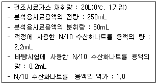
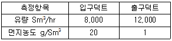
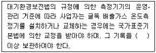

대기환경산업기사 (2006-03-05 기출문제)
1과목: 대기오염개론
1. 런던스모그 사건에 대한 설명 중 틀린 것은?
- 대기는 무풍, 복사성역전 상태였다.
- 대기는 매우 안정하고 습도는 높았다.
- 열적 산화반응을 통하여 스모그가 형성되었다.
- 주요 배출원은 공장 및 가정의 난방이었다.
(정답률: 알수없음)

2. 고온의 연소과정에서 화염속에서 주요 생성되는 질소산화물은?
- NO
- NO2
- NO3
- N2O5
(정답률: 알수없음)
3. 다음 대기오염 물질중 2차 오염물질에 해당되지 않는 것은?
- O3
- NOCl
- H2O2
- NaCl
(정답률: 알수없음)
4. 다음의 대기오염 사건 중 주 오염물질이 H2S 인 것은?
- 포자리카 사전
- 보팔 사건
- 도노라 사건
- 뮤즈계속 사건
(정답률: 알수없음)
5. “상자모델”이론을 전개하기 위하여 설정된 가정과 가장 거리가 먼 것은?
- 오염물 분해는 일차반응에 의한다.
- 오염원은 방출과 동시에 균등하게 혼합된다.
- 오염물은 점원으로부터 계속적으로 방출된다.
- 고려된 공간에서 오염물의 농도는 균일하다.
(정답률: 알수없음)
6. 다음 중 기체상태에서 밀도가 가장 큰 것은?
- H2S
- NH3
- CO
- Cl2
(정답률: 알수없음)
7. 광화학적 스모그(Somg)의 3대 생성요소가 아닌 것은?
- 질소산화물(NOx)
- 올레핀(Olefin)계 탄화수소
- 아황산가스(SO2)
- 자외선
(정답률: 알수없음)
8. 굴뚝에서 배출되어지는 연기의 모양과 대기상태를 설명한 것 중 환상형(looping)에 관하여 맞는 것은?
- 상층이 불안정하고 하층이 안정할 경우에 나타나며, 연기가 서서히 확산된다.
- 전체 대기층이 중립일 경우에 나타나며, 연기모양의 요동이 적은 형태이다.
- 전체 대기층이 강한 안정시에 나타나며, 지상에는 오염물질의 영향이 매우 크다.
- 전체 대기층이 불안정할 경우에 나타나며, 연기의 모양이 상하로 요동이 심하며, 순간적으로 지상에 고농도가 될 수 있다.
(정답률: 알수없음)
9. 표준상태에서 오존량의 단위인 1 Dobson 의 두께는?
- 1.0cm
- 0.1cm
- 0.1mm
- 0.01mm
(정답률: 알수없음)
10. 자동차의 크랑크 케이스(blow by)에서 가장 많이 배출되는 가스는?
- 탄화수소
- 황산화물
- 일산화탄소
- 질소산화물
(정답률: 알수없음)
11. 대기층의 구조에 관한 설명으로 틀린 것은?
- 지상 50km 이상 80km 까지를 중간권이라 한다.
- 중간권은 고도가 증가할수록 온도가 낮아진다.
- 오존층은 대류권과 성층권 중간에 위치한다.
- 성층권은 고도가 증가할수록 온도가 높아진다.
(정답률: 알수없음)
12. 가솔린 자동차 운전조건(Mode)중 일산화탄소를 가장 적게 배출하는 것은?
- 감속
- 정속
- 공회전
- 가속
(정답률: 알수없음)
13. 배출가스중의 SO2농도를 측정한 결과 100ppm이었다. 이 배출가스를 1차 처리하여 90% 제거하고, 다시 2차 처리하여 95% 제거한 후 배출할 경우 배출농도는?
- 약 0.3mg/m3
- 약 1.4mg/m3
- 약 2.8mg/m3
- 약 3.8mg/m3
(정답률: 알수없음)
14. 어느 공장에서 배출되는 아황산가스의 농도가 460ppm이다. 이 공장에서 시간당 배출가스량이 60m3이라면 하루에 발생되는 아황산가스는 몇 kg인가? (단, 표준상태 기준, 공장은 연속가동됨)
- 1.89
- 2.58
- 3.50
- 4.56
(정답률: 알수없음)
15. 굴뚝 설계시 풍하방향의 건물 높이가 50m 라고 할 때 건물에 연기가 휘말려 떨어지는 현상을 방지하기 위한 굴뚝의 높이는 최소 몇 m 이상 되어야 하는가?
- 50m
- 75m
- 100m
- 125m
(정답률: 알수없음)
16. 다음 그림은 하와이의 한 관측소에서 30년 동안 한 달 간격으로 측정한 CO2의 농도 분포도이다. 매년 일정한 증감을 거듭하여 340ppm까지 서서히 증가함을 볼 수 있다. CO2의 농도가 매년 계절적으로 감소를 거듭하는 가장 적절한 이유는? (문제 오류로 문제 및 보기 내용이 정확하지 않습니다. 정확한 내용을 아시는 분께서는 오류신고를 통하여 내용 작성 부탁드립니다. 정답은 3번입니다.)
- 화석연료의 사용증가 때문이다.
- 화산의 활동 때문이다.
- 식물 및 토양의 광합성작용과 호흡작용 때문이다.
- 인구의 증가 때문이다.
(정답률: 알수없음)
17. 태양에너지의 복사와 관련된 이론중 최대에너지 파장과 흑체 표면의 절대온도가 반비례함을 나타내는 법칙은?
- 알배도 법칙
- 비인의 변위변칙
- 플랑크 법칙
- 스테판-불츠만의 법칙
(정답률: 알수없음)
18. 분진농도가 80μg/m3이고, 상대습도가 70%인 상태의 대도시에서 가시거리는 몇 km인가? (단, A=1.3)
- 12.56
- 16.25
- 21.46
- 26.80
(정답률: 알수없음)
19. O3에 대한 반응이 가장 예민하고 그 피해가 쉽게 나타나는 식물은?
- 양파
- 해바라기
- 시금치
- 아카시아
(정답률: 알수없음)
20. 콜리올리 힘에 관한 설명으로 틀린 것은?
- 지구 자전운동에 의하여 생긴다.
- 전향력이라 한다.
- 지구의 적도지방에서 최대가 된다.
- 힘의 방향은 경도력과 반대이다.
(정답률: 알수없음)
2과목: 대기오염 공정시험 기준(방법)
21. 굴뚝에서 배출되는 가스 중의 브롬 화합물을 측정할 때 적용되는 측정법은?
- 차아염소산염법
- 질산은적정법
- 요오드적정법
- 아세틸아세톤법
(정답률: 알수없음)
22. 흡광광도법에 관한 설명으로 틀린 것은?
- 광원부의 광원에서 텅스텐램프, 중수소방전광 등을 사용하여 자외부의 광원으로는 중수소방전관을 주로 사용한다.
- 광전광도계는 파장선택부에 단색화장치를 사용한 것으로 복단광속형이 많고 구조가 복잡하다.
- 측광부의 광전측광에는 광전관, 광전자증배관, 광전도셀 또는 광전지를 사용한다.
- 측광부에서 광전지는 주로 가시파장 범위내에서의 광선측광에 사용된다.
(정답률: 알수없음)
23. 비분산 적외선 분석법 적용시 분석계의 광원으로 가장 적절한 것은?
- 좁은 선폭을 갖고 휘도가 높은 스펙트럼을 방사하는 중공음극램프
- 니크롬선 또는 탄화규소의 저항체에 전류를 흘려 가열한 것
- 근적외부의 광원인 텅스텐램프
- 적외선 광원인 중수소방전관
(정답률: 알수없음)
24. 굴뚝측정공에서 원통여지를 사용하여 먼지를 포집하였다. 측정결과는 다음과 같을 때 먼지농도는? (단, 흡인가스량(표준상태) : 50L, 먼지포집전의 원통 여지무게 : 5.3720g, 먼지포집후의 원통여지무게 : 5.3850g)
- 310mg/Sm3
- 290mg/Sm3
- 260mg/Sm3
- 230mg/Sm3
(정답률: 알수없음)
25. 다음 분석대상가스 중 수산화나트륨용액을 흡수액으로 사용하지 않는 것은?
- 불소
- 페놀
- 벤젠
- 브롬
(정답률: 알수없음)
26. 취급 또는 보관하는 동안에 이물(異物)이 들어가거나 또는 내용물이 손실되지 않도록 보호하는 용기는?
- 기밀용기
- 밀봉용기
- 밀폐용기
- 차광용기
(정답률: 알수없음)
27. 수분 흡수관의 사용전후 무게 차이가 30g 이고 건조공기 흡인량이 표준상태에서 100L이었다. 표준상태에서의 총가스 흡인량은?
- 122.4 L
- 137.3 L
- 144.8 L
- 154.4 L
(정답률: 알수없음)
28. 비분산적외선 분석법에서 사용하는 용어의 의미로 알맞지 않는 것은?
- 스팬 드리프트 : 계기의 눈금스팬에 대응하는 지시치의 일정 기간내의 변동
- 정분산형 : 측정성분을 흡수하는 적외선을 그 흡수파장에서 측정하는 방식
- 비분산 : 빛을 프리즘이나 회절격자와 같은 분산소자에 의하여 분산하지 않는 것
- 스팬가스 : 분석계의 최고 눈금값을 교정하기 위하여 사용하는 가스
(정답률: 알수없음)
29. 배출허용 먼지 채취시 배출구(굴뚝)의 직경이 2.2m의 원형 단면일 때 필요한 측정점의 반경구분수와 측정점수는?
- 반경구분수 1, 측정점수 4
- 반경구분수 2, 측정점수 8
- 반경구분수 3, 측정점수 12
- 반경구분수 4, 측정점수 16
(정답률: 알수없음)
30. 굴뚝에서 배출되는 가스중의 염소를 분석하기 위해 사용되는 흡수액으로 적절한 것은?
- 붕산용액
- 수산화나트륨용액
- 디에틸아민구리액
- 오르톨리딘염산염용액
(정답률: 알수없음)
31. 다음은 중화적정법에 의해 배출가스 중의 황산화물을 분석한 결과이다. 황산화물의 농도는?

- 720 ppm
- 640 ppm
- 560 ppm
- 480 ppm
(정답률: 알수없음)
32. 굴뚝 배출가스 중 총탄화수소 측정장치시스템에 관한 설명으로 틀린 것은?
- 시료채취관은 스테인레스강 또는 이와 동등한 재질의 것으로 한다.
- 시료채취관은 굴뚝중심 부분의 10% 범위내에 위치할 정도의 길이의 것을 사용한다.
- 기록계를 사용하는 경우에는 최소 2회/분이 되는 기록계를 사용한다.
- 시료도관은 스테인레스강 또는 테플론 재질로 시료의 응축방지를 위해 가열할 수 있어야 한다.
(정답률: 알수없음)
33. 굴뚝등에서 배출되는 가스중의 벤젠을 분석하는 방법으로 가스크로마토그래피법을 적용 할 때 분석방법과 거리가 먼 것은?
- 고체흡착열탈착법
- 고체흡착용매추출법
- 테들라 백-열탈착법
- 테들라 백-용매추출법
(정답률: 알수없음)
34. 배출가스중의 페놀화합물을 흡광광도법으로 측정할 때 시료액에 4 - 아미노 안티피린 용액과 페리시안산칼륨용액을 가한 경우 발색되는 색은?
- 황색
- 황록색
- 적색
- 청색
(정답률: 알수없음)
35. 휘발성 유기화합물질(VOC) 누출확인을 위한 휴대용 측정기기의 규격 및 성능으로 틀린 것은?
- VOC측정기기의 검출기는 시료와 반응하여서는 안된다.
- 기기는 규정에 표시된 누출농도를 측정할 수 있어야 한다.
- 기기의 계기눈금은 최소한 표시된 누출농도의 ±5%를 읽을 수 있어야 한다.
- 기기는 펌프를 내장하고 있어 연속적으로 시료가 검출기로 제공되어야 한다.
(정답률: 알수없음)
36. 실험의 기재 및 용어에 관한 설명중 틀린 것은?
- '감압 또는 진공'이라 함은 따로 규정이 없는 한 15mmHg 이하를 뜻한다.
- 용액의 액성표시는 따로 규정이 없는 한 유리전극법에 의한 pH 미터로 측정한 것을 뜻한다.
- 시료의 시험, 바탕시험, 표준용액에 대한 시험을 일련의 동일 시험으로 행할 때 시약 또는 시액은 동일롯트(lot)로 제조된 것을 사용한다.
- 액체성분의 양을 '정확히 취한다' 함은 비이커, 플라스크 또는 이와 동등 이상의 정도를 갖는 용량계를 사용하여 조작함을 뜻한다.
(정답률: 알수없음)
37. 다음은 굴뚝 배출가스 시료채취 장치중의 가스 채취부에 관한 설명이다. 틀린 것은 ?
- 수은마노미터는 대기와 압력차가 100mmHg 이상의 것을 사용한다.
- 가스 건조탑은 유리로 만든 것을 쓰며 건조제로는 입사상태의 실리카겔, 염화칼슘 등 을 쓴다.
- 펌프는 배기능력 5 -20L/min의 밀폐형 펌프를 사용한다.
- 가스미터는 1회전 1L 되는 습식 또는 건식가스 미터로 온도계와 압력계가 붙어 있는 것을 쓴다.
(정답률: 알수없음)
38. 아세틸 아세톤법으로 배출가스에 포함된 포름알데히드를 측정할 때 아황산가스가 공존 하면 영향을 받는다. 이 영향을 방지하기 위하여 흡수발색액에 가하는 시약은?
- 염화제이수은과 염화나트륨
- 요오드칼륨용액, 디에틸아민 용액
- 디에틸디티오 카바민산나트륨, 질산칼륨
- 수산화나트륨, 페놀디설폰산 용액
(정답률: 알수없음)
39. 환경대기중의 아황산가스 측정방법의 종류중 자동연속측정법이 아닌 것은?
- 자외선형광법
- 불꽃광도법
- 용액전도율법
- 비분삭적외선법
(정답률: 알수없음)
40. 굴뚝에서 배출되는 가스 중의 시안화수소 측정법 중 적정법에 사용되는 적정 용액은?
- 0.01N KMnO4용액
- 0.01N NaOH용액
- 0.01N AgNO3용액
- 0.01N H2SO4용액
(정답률: 알수없음)
3과목: 대기오염방지기술
41. CH3OH 5kg을 연소시키는데 필요한 실제 공기량(Sm3)은? (단, 과잉공기계수 (m) = 1.5)
- 22.5 Sm3
- 27.5 Sm3
- 32.5 Sm3
- 37.5 Sm3
(정답률: 알수없음)
42. 원심력집진기의 사이클론에서 원심력(Fc)을 중력(Fg)으로 나눈 값을 분리계수(separation factor)라 하면, 다음의 분리계수에 대한 설명중 옳은 것은?
- 분리계수는 중력가속도에 비례한다.
- 분리계수는 배출가스 접선속도의 제곱에 비례한다.
- 분리계수는 사이클론 원추하부의 반경에 비례한다.
- 분리계수가 클수록 집진율이 떨어진다.
(정답률: 알수없음)
43. 크기가 1.2m × 2.0m × 1.5m 인 연소실에서 저 발열량이 10,000kcal/kg 인 중유를 1시간에 100kg씩 연소시키고 있다. 연소실 열발생율은?
- 약 12 × 104kcal/m3hr
- 약 20 × 104kcal/m3hr
- 약 28 × 104kcal/m3hr
- 약 35 × 104kcal/m3hr
(정답률: 알수없음)
44. 액체 연료의 버어너에 있어 그 유량의 조절 범위가 가장 큰 것은?
- 유압식 버어너
- 회적식 버어너
- 로터리식 버어너
- 고압공기식 버어너
(정답률: 알수없음)
45. 세정집진장치에서 입자와 액적 간의 충돌 횟수가 많을 수록 집진효율은 증가하게 되는데 관성출동계수(효과)를 크게 하기 위한 조건으로 틀린 것은?
- 분진의 입경이 커야 한다.
- 분진의 밀도가 커야 한다.
- 액적의 직경이 커야 한다.
- 처리가스의 점도가 낮아야 한다.
(정답률: 알수없음)
46. 유황함유량이 1.6%인 중유를 매시 100톤 연소시킬 때 굴뚝으로 부터의 SO2 배출량(Nm3/h)은? (단, 유황분중 5%는 SO3로서 배출하며 나머지는 SO2로 배출됨.)
- 약 1120 Nm3/h
- 약 1060 Nm3/h
- 약 950 Nm3/h
- 약 530 Nm3/h
(정답률: 알수없음)
47. 여과집진시설의 입 ㆍ 출구의 데이터가 아래와 같을 때 이 집진기의 집진율?

- 92.5%
- 94.5%
- 95.5%
- 97.5%
(정답률: 알수없음)
48. 다음 가스중 '헨리의 법칙'을 적용하기에 가장 적절치 못한 것은?
- SO2
- NO
- O2
- CO
(정답률: 알수없음)
49. 다음 중 유해가스를 처리하기 위한 흡수액의 구비 요건 중 틀린 것은?
- 용해도가 높아야 한다.
- 휘발성이 커야 한다.
- 점성이 비교적 작아야 한다.
- 화학적으로 안정 되어야 한다.
(정답률: 알수없음)
50. 지름 300mm, 유효높이 11.5m인 원통형 filter bag을 사용하여 먼지농도 5g/m3인 배출가스를 1200m3/min로 처리한다. 겉보기 여과속도를 1.2cm/sec로 하고자 할 때 filter bag의 필요한 수는?
- 91개
- 142개
- 149개
- 154개
(정답률: 알수없음)
51. 송풍기를 운전할 때 필요유량에 과부족을 일으켜 송풍기의 유량을 조절해야 한다. 유량 조절 방법과 거리가 가장 먼 것은?
- 회전수 조절
- 안내익 조절(Vane control)
- 댐퍼(Damper)설치
- 에어커튼(Ail curtain)설치
(정답률: 알수없음)
52. 연료비(고정탄소/휘발분)가 가장 높은 석탄은?
- 갈색갈탄
- 흑색 갈탄
- 무연탄
- 역청탄
(정답률: 알수없음)
53. 탄소 75kg과 수소 15kg을 완전연소 시키는데 필요한 이론적인 산소의 양은?
- 180kg
- 240kg
- 280kg
- 320kg
(정답률: 알수없음)
54. 발생원으로부터 집진장치를 포함한 송풍기까지의 전압력 손실이 240mmH2O일 때 처리 가스량이 36000m3/h 였다면, 송풍기의 소요동력은?
- 35.2 kW
- 40.3 kW
- 46.7 kW
- 50.3 kW
(정답률: 알수없음)
55. 어떤 1차반응에서 100초 동안 반응물의 반이 분해되었다 반응물이 1/10 남을 때까지 걸리는 시간은?
- 약 612초
- 약 515초
- 약 420초
- 약 340초
(정답률: 알수없음)
56. 부피로 CH4 80%, O2 10%, N2 10% 로 조성된 가스(1Nm3)를 연소하기 위한 이론적 공기량 (Nm3)은?
- 약 7.1
- 약 7.7
- 약 8.4
- 약 8.9
(정답률: 알수없음)
57. 어느 유해가스와 물이 일정온도하에서 평형상태를 이루고 있을 때 가스의 분압이 42mmHg, 물 중의 가스농도가 2.4kg ㆍ mol/m3이면 이 때의 헨리상수는 얼마인가? (단, 전압은 1기압, 헨리정수의 단위는 atm ㆍ m3/kg ㆍ mol 이다.)
- 0.042
- 0.032
- 0.023
- 0.014
(정답률: 알수없음)
58. 배출가스 중의 HCl을 충전탑에서 수산화칼슘 수용액과 향류로 접촉시켜 흡수 제거시킨다. 충전탑의 높이가 2.5m 일 때 90%의 흡수효율을 얻었다면, 높를 4m로 높이면 흡수 효율은 몇 %인가? (단, 이동단위수 로 계산되고, E는 효율이며 NOG는 일정하다.)
- 92.5
- 94.5
- 95.3
- 97.5
(정답률: 알수없음)
59. 다음 분진의 입경측정 방법 중 측정방법과 가장 거리가 먼 것은?
- 관성충돌법
- 액상침강법
- 광산란법
- 표준체 측정법
(정답률: 알수없음)
60. 다음의 연료에 대한 설명중 틀린 것은?
- 중유에는 A, B, C 중유가 있는데 이것은 인화점을 기준하여 분류된다.
- 기체연료는 연소시 공급연료 및 공기량을 밸브를 이용하여 간단하게 임의로 조절할 수 있어 부하변동범위가 넓다.
- 기체연료는 적은 과잉공기로써 완전연소가 가능하다.
- 액체연료는 계량이 용이하다.
(정답률: 알수없음)
4과목: 대기환경 관계 법규
61. 공동방지시설을 설치할 경우 운영기구의 대표자가 시ㆍ도지사에게 제출해야할 서류가 아닌 것은?
- 사업장에서 공동방지시설에 이르는 연결관의 설치도면 및 명세서
- 사업장별 원료사용량 및 제품생산량을 기재한 서류와 공정도
- 공동방지시설의 위치도 (축척 5만분의 1의 지형도)
- 공동방지시설의 운영에 관한 규약
(정답률: 알수없음)
62. 대기오염물질 배출시설 설치신고(허가)를 한 자가 사업장의 명칭을 변경하는 경우 대기환경보전법 규정의 변경신고 시기는?
- 그 사유가 발생한 날로부터 7일이내에
- 그 사유가 발생한 날로부터 10일이내에
- 그 사유가 발생한 날로부터 15일이내에
- 그 사유가 발생한 날로부터 30일이내에
(정답률: 알수없음)
63. 가스상물질 중 시안화수소의 배출허용기준으로 적절한 것은? (단, 모든 배출시설)
- 3ppm이하
- 5ppm이하
- 10ppm이하
- 30ppm이하
(정답률: 알수없음)
64. 대기환경보전법의 규정에 의한 초과부과금의 부과대상 오염물질의 종류가 아닌 것은 ?
- 불소화합물
- 이황화탄소
- 악취
- 시안화수소
(정답률: 알수없음)
65. 환경기준으로 8시간 평균치가 0.06ppm 이하 이고, 1시간 평균치가 0.1ppm 이하인 항목은?
- 아황산가스
- 일산화탄소
- 이산화질소
- 오존
(정답률: 알수없음)
66. 다음의 대기환경기준 설정 항목 중 자외선형광법으로 측정하는 것은? (단, 환경정책 기본법 기준)
- 일산화탄소
- 오존
- 이산화질소
- 아황산가스
(정답률: 알수없음)
67. 대기측정망 설치계획에 포함될 사항으로 가장 알맞은 것은?
- 측정망 설치방법
- 측정대상오염물질
- 측정망 설치시기
- 측정망 운영방법
(정답률: 알수없음)
68. 자동차연료인 휘발유 제조기준 중 황함량 기준은? (단, 2006년 1월 1일부터 적용되는 기준)
- 10ppm 이하
- 20ppm 이하
- 30ppm 이하
- 50ppm 이하
(정답률: 알수없음)
69. ( )안에 들어가야 할 내용은?

- 6월
- 1년
- 2년
- 3년
(정답률: 알수없음)
70. 대기환경보전법에서 사용되는 용어의 정의로 틀린 것은?
- “대기오염물질배출시설”이라 함은 대기오염물질을 대기에 배출하는 시설물 ㆍ 기계 ㆍ 기구 기타 물체로서 환경부령으로 정하는 것을 말한다.
- “먼지”라 함은 대기 중에 떠다니거나 흩날려 내려오는 입자상물질을 말한다.
- “매연”이라 함은 연소시에 발생하는 유리탄소가 응결하여 입자의 지름이 1미크론 이상이 되는 입자상물질을 말한다.
- “휘발성유기화합물”이라 함은 탄화수소류중 석유화학제품, 유기용제 그 밖의 물질로서 환경부장관이 관계중앙행정기관의 장과 협의하여 고시하는 것을 말한다.
(정답률: 알수없음)
71. 대기환경기준 항목 중 미세먼지 입자의 크기 기준으로 적절한 것은?
- 0.1 ㎛ 이하
- 1.0 ㎛ 이하
- 10 ㎛ 이하
- 100 ㎛ 이하
(정답률: 알수없음)
72. 대기오염방지시설과 가장 거리가 먼 것은?
- 미생물을 이용한 처리시설
- 응축에 의한 시설
- 응집에 의한 시설
- 흡착에 의한 시설
(정답률: 알수없음)
73. 자가측정대상 배출구별 규모에 따른 측정횟수기준으로 알맞은 것은?
- 먼지ㆍ황산화물 및 질소산화물의 연간 발생량 합계가 20톤 이상 80톤 미만인 시설 - 월 1회 이상
- 먼지ㆍ황산화물 및 질소산화물의 연간 발생량 합계가 20톤 이상 80톤 미만인 시설 - 월 2회 이상
- 먼지ㆍ황산화물 및 질소산화물의 연간 발생량 합계가 10톤 이상 20톤 미만인 시설 - 월 1회 이상
- 먼지ㆍ황산화물 및 질소산화물의 연간 발생량 합계가 10톤 이상 20톤 미만인 시설 - 월 2회 이상
(정답률: 알수없음)
74. 배출시설등의 가동개시 신고를 하지 아니하고 조업한 자에 대한 벌칙기준으로 적절한 것은?
- 벌금 100만원 이하
- 벌금 200만원 이하
- 1년 이하의 징역 또는 500만원 이하의 벌금
- 2년 이하의 징역 또는 1000만원 이하의 벌금
(정답률: 알수없음)
75. 조업정지에 갈음하여 부과할 수 있는 과징금의 최대액수로 알맞은 것은?
- 1억원
- 2억원
- 3억원
- 5억원
(정답률: 알수없음)
76. 다음중 오염도 검사기관과 가장 거리가 먼 것은?
- 국립환경연구원
- 대기환경연구원
- 환경관리공단
- 수도권대기환경청
(정답률: 알수없음)
77. 특정대기 유해물질이 아닌 것은?
- 아닐린
- 벤지딘
- 스틸렌
- 프로필렌 옥사이드
(정답률: 알수없음)
78. 대기환경보전법에 규정된 초과부과금 산정기준 중 먼지 1kg당 부과 금액은?
- 550원
- 770원
- 1,200원
- 1,500원
(정답률: 알수없음)
79. 다음 중 자동차 연료용 첨가제의 종류가 아닌 것은?
- 세척제
- 유동성 향상제
- 매연 분산제
- 세탄가 향상제
(정답률: 알수없음)
80. 대기환경보전법의 규정에 의한 대기오염물질 배출시설인 것은? (단, 공통시설인 도장시설 기준)
- 용적 2m3
- 용적 3m3
- 동력 2마력
- 동력 3마력
(정답률: 알수없음)
런던스모그 사건은 1952년 12월 5일부터 9일까지 런던에서 일어난 대기오염 사건입니다. 이 사건은 대기 중 미세먼지와 유기화합물, 이산화황 등이 농도가 높아져서 발생한 것으로, 주요 배출원은 공장 및 가정의 난방이었습니다.
대기는 무풍, 복사성역전 상태였고, 대기는 매우 안정하고 습도는 높았습니다. 이러한 조건이 스모그가 형성되는데 중요한 역할을 했습니다. 스모그는 이산화질소와 유기화합물이 열적 산화반응을 일으켜서 형성됩니다. 이산화질소와 유기화합물이 농도가 높아지면서 열적 산화반응이 증폭되어 스모그가 형성되었습니다.